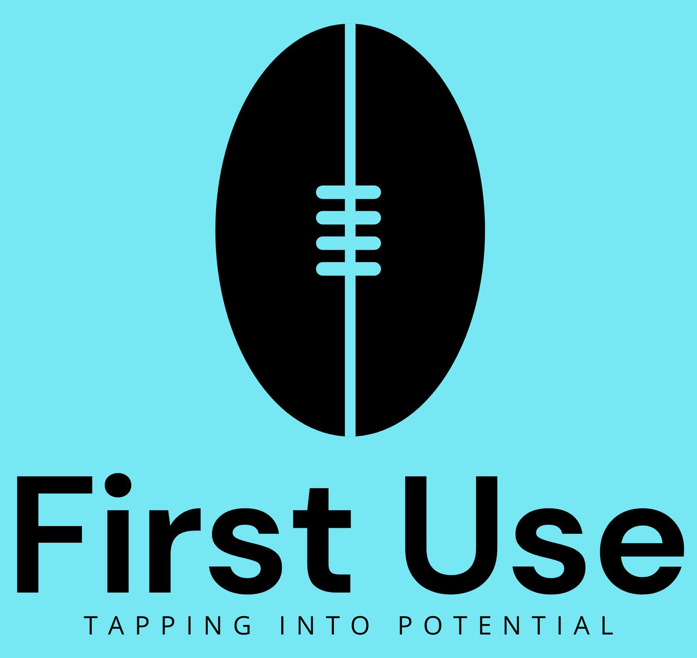

First Use · Business Case · 23 September 2026
The case for an AFL-native, phone-first diagram and publishing platform for community football coaches — and the value it returns to the grassroots game.
Australian football has 28,500 registered community coaches and 380,000+ local players, yet no product lets a volunteer coach draw, brand, and share an AFL game plan from their phone. The AFL-native tools do game-day logistics; the diagram tools are multi-sport, iPad-era, or poorly executed. Demand for the output — ball-movement diagrams, telestrated clips, club-branded graphics — is visibly proven, but today it is served by hand-drawing, blurry screenshots in group chats, or expensive outsourced services.
This product fills that gap with a phone-first, AFL-native diagram and publishing tool at community pricing Free tier ~A$39/yr coach ~A$149/yr club. The build is low-capital (PWA), the category is validated in other codes, and the community value — better coaching communication, club visibility, support for the growing women's cohort — is direct and measurable.
Recommendation — proceed as a speed-led niche play. Commercially it is an indie/small-team business (realistic path to A$50–200k/yr), not a venture-scale outcome unless league-level (B2B2C) distribution lands. The community return on a modest build is high — which is the core of this case.
Community AFL coaches are overwhelmingly volunteers coaching from their phones, and their diagram workflow is:
Meanwhile the existing AFL software category serves a different job: rotations, interchange, stats, and game-day management (Great Coach AFL, Rookie Me Play, iSports). The communication and education job — "explain the plan to players and parents" — has no AFL-native tool. The result: worse-prepared players, weaker club content, and volunteer hours wasted on workarounds.
2025 accreditation is free — the AFL is actively growing the registered-coach base the product targets, yet offers education only, with no tool.
+15% YoY, with an AFL target of 40% female coaches by 2030 — a cohort that skews phone-first and is underserved by iPad-centric incumbents.
Recruitment, sponsorship, and parent engagement all run through Instagram and group chats. Diagrams are content — and nobody formats them for that job.
Soccer tactic boards with 1M+ installs win on PNG-to-group-chat export, team-colour theming, and photo overlay. AFL hasn't had this treatment.
CourtDraw has the feature list (AFL court, photo overlay, branding, PNG export) but rates as a very poor product in first-hand evaluation. Demand proven; quality headroom open.
The 2021 shutdown of the leading community telestration tool left a hole nothing community-priced has filled since.
| Layer | Size | Notes |
|---|---|---|
| Beachhead — AFL community coaches | 28,500 registered (2025, +5% YoY) | 10% adoption ≈ 2,850 users |
| Expansion codes — netball, rugby league/union, soccer | 100–150k+ registered coaches | Same engine; proven multi-code pattern |
| Adjacent | School teachers, club content managers, AFL creators | Shinboner-style creators seed awareness |
Willingness to pay is anchored — PlayBook $14.99/yr · TacticalPad $24–63/yr · Coach Tactic Board $8–23/yr · CourtDraw ~A$10/mo · iSports community $4.49/mo. The community sweet spot of A$20–50/yr per coach is established by five comparable products.
No signal here is speculative — each is observable behaviour people already pay time or money for.
The Shinboner built a substantial following on hand-drawn ball-movement diagrams — the content format is consumed; the tooling is manual.
Paid "Designing Ball Movement for AFL Coaches" workshops ($59/head, 2025) sell out — coaches pay real money for this knowledge domain.
TOPPA employs 20–30 staff doing filming, tagging and telestration as a service — demand exists but is served manually and expensively at club level.
AFL club analysts list telestration as a core skill and hand-build "coach-friendly visuals" — the professional end of the same need.
App Store reviews of existing boards show community coaches asking for exactly this simplicity ("better than pen and paper").
CourtDraw's own pitch — "players squinting at blurry screenshots in the group chat" — validates the share-to-WhatsApp/Instagram loop as the core job-to-be-done.
Nothing in the market combines all five of these. (Full landscape: market-research.md §7.)
The moat is not the canvas — tactic boards are feature-commoditised. The moat is AFL community brand, default-to-beautiful output, and the trace → brand → export → share workflow.
Exposure is real: CourtDraw could add AFL depth; AFL Drill Board is free, AFL-specific and community-visible; Rookie Me / iSports have distribution; the AFL itself could build or partner. Speed and community trust are the counter — own the wedge before a feature-list rival fixes its execution.
This is where the product generates positive value disproportionate to its size.
Replaces 30–60 minutes of hand-drawing and photo-editing per plan with minutes on a phone. No design skill needed — default-branded, club-professional output from a volunteer who "can't draw an arrow."
Clearer visual explanation of structures and ball movement → faster learning and more equal experience for kids whose coaches aren't professional educators. Diagrams that actually get shared, not lost on a whiteboard.
Social content drives recruitment, retention and sponsor appeal. Small volunteer clubs get broadcast-quality, club-branded visuals at A$149/yr — or free — instead of professional-service prices. Every shared diagram becomes club marketing.
Directly complements free accreditation (growing the coach base) and the 40%-female-coaches-by-2030 target (a phone-first tool for the cohort driving growth). Keeps a community telestration capability alive after Coach's Eye's 2021 shutdown.
The equity argument: the users least able to pay — junior club volunteers, new female coaches, regional clubs — get a genuinely useful Free tier, cross-subsidised by clubs and serious users. This is a community product with a business model, not the reverse.
Model: freemium SaaS.
3 saved plans, watermarked. Goodwill with volunteers; the top of the funnel.
Unlimited plans, club branding, screenshot tracing, watermark-free social exports.
10 seats, shared library, branded exports for all staff. Plus league/association licensing (B2B2C) as the scale lever.
| Scenario | Registered users | Paid conversion | Annual revenue |
|---|---|---|---|
| Conservative (Y1–2, AFL only) | 3,000 | ~4% (120 coaches + 25 clubs) | ~A$9k |
| Base (Y3, AFL mature) | 12,000 | ~6% (720 coaches + 120 clubs) | ~A$50k |
| Upside (multi-code + B2B2C) | 60,000 across codes | ~5% + 10 league deals @ A$2.5k | ~A$200k |
Read the table honestly. The base case sustains a solo founder or micro-team; the upside requires multi-code execution and institutional deals. This is not venture-scale on consumer subscriptions alone — it is a durable niche business with modest build/run costs (PWA, no native apps at launch, commodity infrastructure) and break-even in the low hundreds of paying coaches.
Crucially, the value case does not depend on the upside scenario. Even the conservative case delivers the community outcomes in Section 07 to thousands of coaches at negligible ongoing cost per user.
| Risk | Severity | Mitigation |
|---|---|---|
| Coaches won't pay $39/yr for polish (unproven in AFL) | High | Validate with 10–15 community coaches pre-build; generous free tier; price sits inside the established $15–63 band |
| Trace-over-screenshot is nice-to-have, not the hook | Medium | Make it the demo centrepiece; test hook vs. branding in validation interviews |
| AFL Drill Board grows into the same space (free, AFL-native, BigFooty-visible) | High | Speed; talk to its builder — partnership/absorption beats a price war with free |
| CourtDraw fixes execution and adds AFL depth | Medium | Its on-paper lead already exists and it's still poor — counter is polish + AFL community brand, not features |
| AFL builds or partners a rival (10% community revenue commitment) | Medium | Position as neutral community infrastructure; make partnership more attractive than building |
| Broadcast screenshot copyright in tracing feature | Medium | ToS guardrails: personal coaching use vs. published club content |
| Junior roster data privacy | Medium | Minimal data collection; AU data residency; engage the question early |
Proceed — as a community-first niche business with speed as the strategy, consistent with the market research verdict. The commercial ceiling is real but modest; the community value per dollar of build cost is high; and the window — between "generic multi-sport court" and "owned by an AFL incumbent" — is open now.
10–15 community coaches (deliberately including the women's cohort): is trace-over-screenshot the killer feature, and is $39/yr acceptable?
Consider approaching its builder before it grows into the same space.
AFL ground, drag-drop, simple palette, social-ratio PNG export, watermark-free paid tier — at TacticalPad-level visual polish.
Round 1 content is the growth loop; seed Shinboner-style creators; align with the Coach.AFL accreditation ecosystem.
E.g. if <5% of alpha coaches say "I'd use this Saturday," or zero conversion intent at $39 — stop or pivot before scaling cost.
The Pitch
There are more registered community AFL coaches in Australia than members of most professional associations, and every one of them is trying to explain footy with a pen, a whiteboard, or a blurry screenshot. Every comparable code solved this years ago; footy hasn't. For the price of a modest PWA build, this product gives volunteer coaches back their evenings, gives 380,000 local players clearer teaching, gives grassroots clubs professional content they can't currently afford, and gives the AFL's own participation and women's-coaching strategies a tool they don't have. It won't be a unicorn — it will be something better suited to its owner: a durable, loved, community-positive business with a defensible niche and a genuine reason to exist.